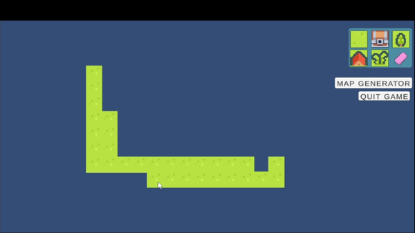

For Emerging Technology class I had the opportunity to experiment with VR in Unity. I decided to create
a small cooking demo in order to demonstrate interactions and locomotion.

Hidden Memories was a semester long project where I had the opportunity to work with a talented artist.
The goal is to escape a maze while fighting off demons and upgrading between runs.

Terrain Generation was the final project for Procedural Generation.
I created a mesh by tessellating a grid and triangulating the geometry, then generated varied terrain using layered Perlin noise.

I had a lot of fun with this project. The goal was to develop an unique algorithm to generate a level. I took it further by making a fully playable level
and adding a player and some nice visual feedback.

This is based on Craig Reynold's Boid's implementation. I attempted to simulate natural flocking behaviour in nature using simple rules to
create emergent behaviour when numerous entities interact with each other.

AJ's Adventure was my final project for Game Mechanics. I expanded an original jam prototype by adding new mechanics such as
jumping and running with smooth animations. I also created my own artwork and transitions, resulting in polished visuals
and strong feedback.

Buzzsaw Cat was a recreation of a top-rated Ludum Dare Compo entry. I implemented its core mechanics
while matching the original visual and audio style. I enhanced the dash mechanic using a segmented dash trail that fades over time.

Brick Fury was my final project for Game Mathematics. It's a 2D breakout clone in Unity. I implemented a finite state machine to manage game states
and polished the gameplay with strong visual feedback.

This was a project for Game Programming. The goal was to read a map from a text, convert it to a tilemap and add player movement with
collisions. I took it further by creating a map editor where you can draw a map yourself.